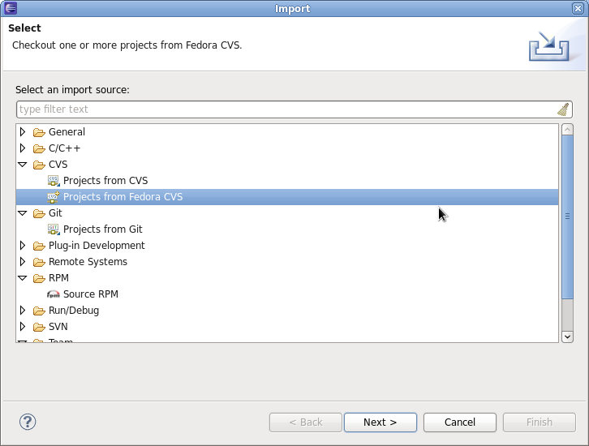

| Dist-CVS Support (Deprecated) | ||
|---|---|---|
|
|
|
|
| Feedback/Reporting Bugs | Updating This Document | |
For historical reasons Eclipse Fedora Packager supports dist-cvs, which has been rendered obsolete by the switch to dist-git with Fedora 14. This documentation has been kept for reference.
Make sure you have run fedora-packager-setup before you start. This you have to do
once on the command line (If you have used fedora-cvs before, this is not necessary). Then, you need to get your Fedora CVS module. Go to "File" => "Import" => "CVS" => "Projects from Fedora CVS"

After you hit "Next" twice, you are ready to specify the module you'd like to check out.

After you hit "Finish" you should have a new project in Eclipse named after the Fedora CVS module you just checked out. Note: If you click "Next" at this step, checkout will most likely fail. This is a bug ( https://fedorahosted.org/eclipse-fedorapackager/ticket/5) we are currently working on.
See section "Do Your Fedora Packaging Work" for help related to your packaging tasks.
|
|

|
|
| Feedback/Reporting Bugs | Updating This Document |